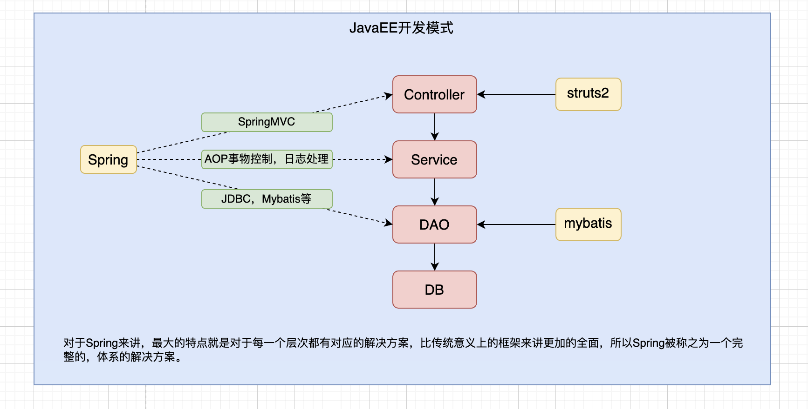
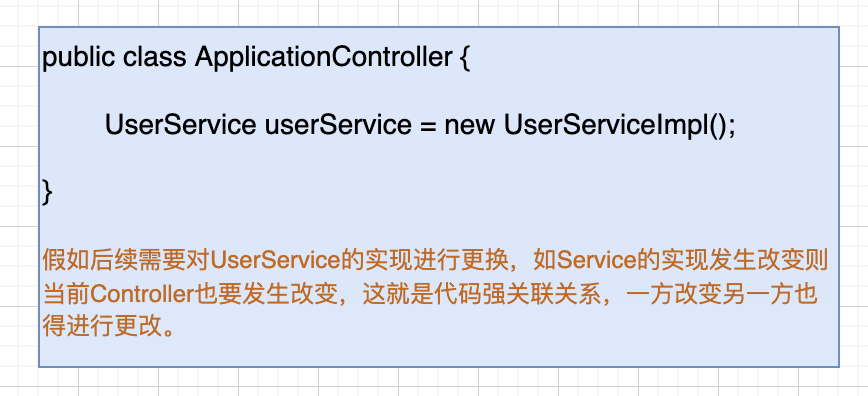

引言
1. EJB(Enterprise Java Bean)存在的问题
1. 运行环境苛刻，运行环境变化代码也需要相应调整
2. 代码移植性差
3. 重量级框架
如下图

2. 什么是Spring
1. Spring是一个轻量级的JavaEE解决方案，整合了众多优秀的设计模式。
2.1. 为什么说是轻量级？
1. 对运行环境没有额外要求，不仅可运行在开源web服务器中，如tomcat、resion、jetty，对收费的也支持，如weblogic、websphere
2. 代码移植性高，不需要实现额外的接口，通过上图可看出↑
2.2. 为什么可以称之为JavaEE解决方案？

2.3. 为什么能够做到轻量级，能够成为一个完整的解决方案？
通过Spring源码可看出，Spring是对原有设计模式的高度封装整合，内部包含工厂、代理、策略、模版等设计模式的合理封装。
3. 设计模式概念
1. 广义概念
面向对象设计中，解决特定问题的经典代码，可以认为只要是一些经典的代码都可以称之为设计模式
2. 狭义概念
GOF4人帮所定义的23种设计模式，例如：工厂、单例、适配器，装饰器、门面、代理、模版等等
4. 工厂设计模式
4.1 什么是工厂设计模式
1. 概念：通过工厂类来创建对象
原始的对象创建则直通过关键字new来声明，例如：
User user = new User();
UserDAO userDAO = new UserDAOImpl();
在工厂设计模式当中，并不提倡这种直接new的方式来创建对象，而是通过一个第三方的工厂类来创建。例如：
User user = BeanFactory.getBean("xxx");
UserDAO userDAO = BeanFactory.getBean("xxx");
那么此时问题就来了，直接new不好吗？为什么还需要通过工厂类来创建？这样不是更加麻烦？
2. 针对上述问题就引出了工厂类的好处
解耦合，降低耦合
3. 什么是耦合？
耦合指的是代码间的强关联关系，一方的改变会影响到另一方，不利于代码的维护。
如上述通过new直接创建对象，假如有一天业务逻辑需求发生改变，需要换个类进行引用，那就需要
修改源代码进行调整(不符合开闭原则)。那工厂则可直接通过配置进行调整，不需要进行源代码的修改，
只需要新增业务类然后进行配置即可(符合开闭原则)。耦合关系如下图

4.2 简单工厂的设计
package com.design.gof.created.factory.method.demo3;
import java.io.IOException;
import java.io.InputStream;
import java.util.Properties;
/**
* 通过简单工厂将代码耦合转移到配置文件中
* Created by Ale on 2022/3/14
*/
public class BeanFactory {
private static Properties env = new Properties();
static {
InputStream inputStream = null;
try {
/**
* 1、通过当前对象流读取 properties 中配置信息
* properties 配置如下
* userService = com.design.gof.created.factory.method.demo3.UserServiceImpl
*/
inputStream = BeanFactory.class.getResourceAsStream("/applicationContext.properties");
/**
* 2、把流加载到Properties集合当中
*/
env.load(inputStream);
} catch (IOException e) {
e.printStackTrace();
} finally {
try {
if (null != inputStream) {
inputStream.close();
}
} catch (IOException e) {
e.printStackTrace();
}
}
}
/**
* 对象的创建方式
* 1.传统的创建方式直接调用构造方法进行创建，
* 例如：UserService userService = new UserServiceImpl();
* 2.通过反射的形式来创建对象，可解决耦合
* Class clazz = Class.forName("com.xxx.xxx.xxx.某个类");
* UserService userService = (UserService) clazz.newInstance();
* @return
*/
public static UserService getUserService() {
UserService userService = null;
try {
Class clazz = Class.forName(env.getProperty("userService"));
userService = (UserService) clazz.newInstance();
} catch (ClassNotFoundException e) {
e.printStackTrace();
} catch (InstantiationException e) {
e.printStackTrace();
} catch (IllegalAccessException e) {
e.printStackTrace();
}
return userService;
}
}
package com.design.gof.created.factory.method.demo3;
/**
* Created by Ale on 2022/3/14
*/
public class User {
private String username;
private String password;
public User() {
}
public User(String username, String password) {
this.username = username;
this.password = password;
}
public String getUsername() {
return username;
}
public void setUsername(String username) {
this.username = username;
}
public String getPassword() {
return password;
}
public void setPassword(String password) {
this.password = password;
}
}
package com.design.gof.created.factory.method.demo3;
/**
* Created by Ale on 2022/3/14
*/
public interface UserService {
void register(User user);
void login(String username, String password);
}
package com.design.gof.created.factory.method.demo3;
/**
* Created by Ale on 2022/3/14
*/
public class UserServiceImpl implements UserService {
private UserDAO userDAO = new UserDAOImpl();
@Override
public void register(User user) {
userDAO.save(user);
}
@Override
public void login(String username, String password) {
userDAO.findByUsernameAndPassword(username, password);
}
}
package com.design.gof.created.factory.method.demo3;
/**
* Created by Ale on 2022/3/14
*/
public interface UserDAO {
void save(User user);
void findByUsernameAndPassword(String username, String password);
}
package com.design.gof.created.factory.method.demo3;
/**
* Created by Ale on 2022/3/14
*/
public class UserDAOImpl implements UserDAO {
@Override
public void save(User user) {
System.out.println("save user");
}
@Override
public void findByUsernameAndPassword(String username, String password) {
System.out.println("query user by username and password");
}
}
package com.design.gof.created.factory.method.demo3;
/**
* Created by Ale on 2022/3/14
*/
public class Client {
public static void main(String[] args) {
/**
* 传统业务调用
*/
// UserService userService = new UserServiceImpl();
UserService userService = BeanFactory.getUserService();
User user = new User("admin", "1234");
userService.register(user);
userService.login("admin", "1234");
}
}
4.3 通用工厂的设计
简单工厂的问题会导致大量代码的冗余，也不符合开闭原则的设计，例如上述代码中的工厂类，需要进一步进行调整，调整如下
public static Object getBean(String key) {
Object ret = null;
try {
Class clazz = Class.forName(env.getProperty(key));
ret = clazz.newInstance();
} catch (Exception e) {
e.printStackTrace();
}
return ret;
}